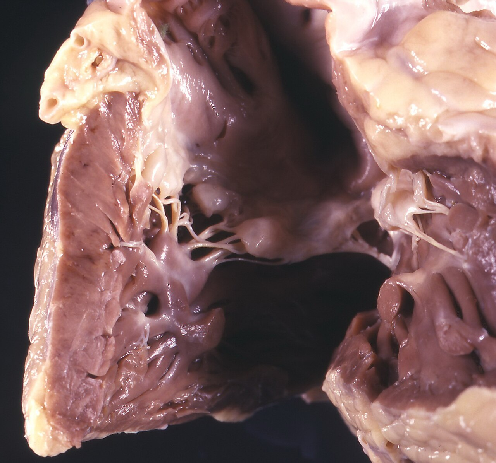
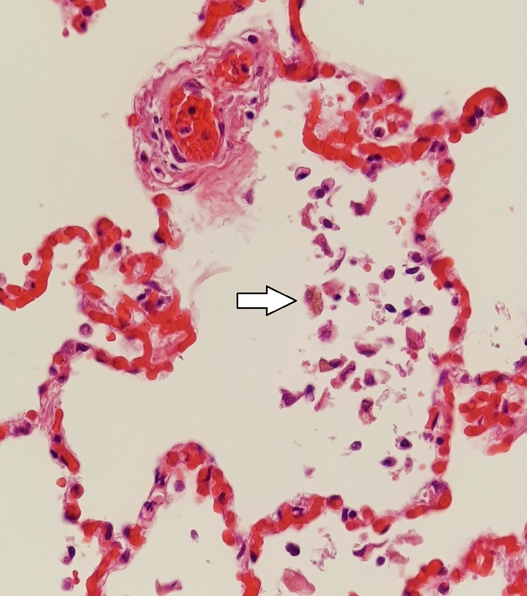
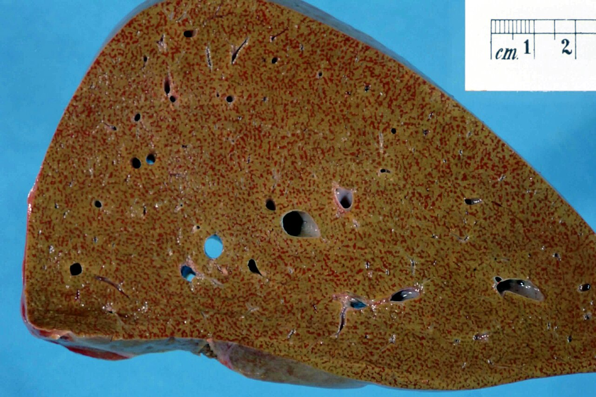
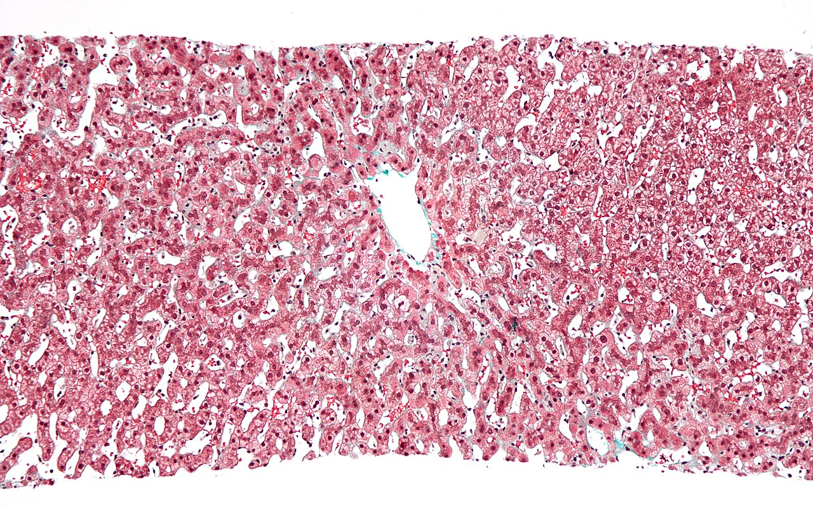
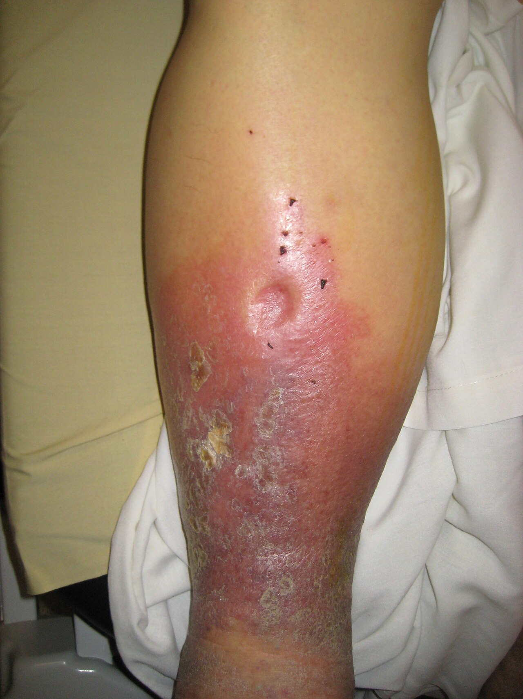
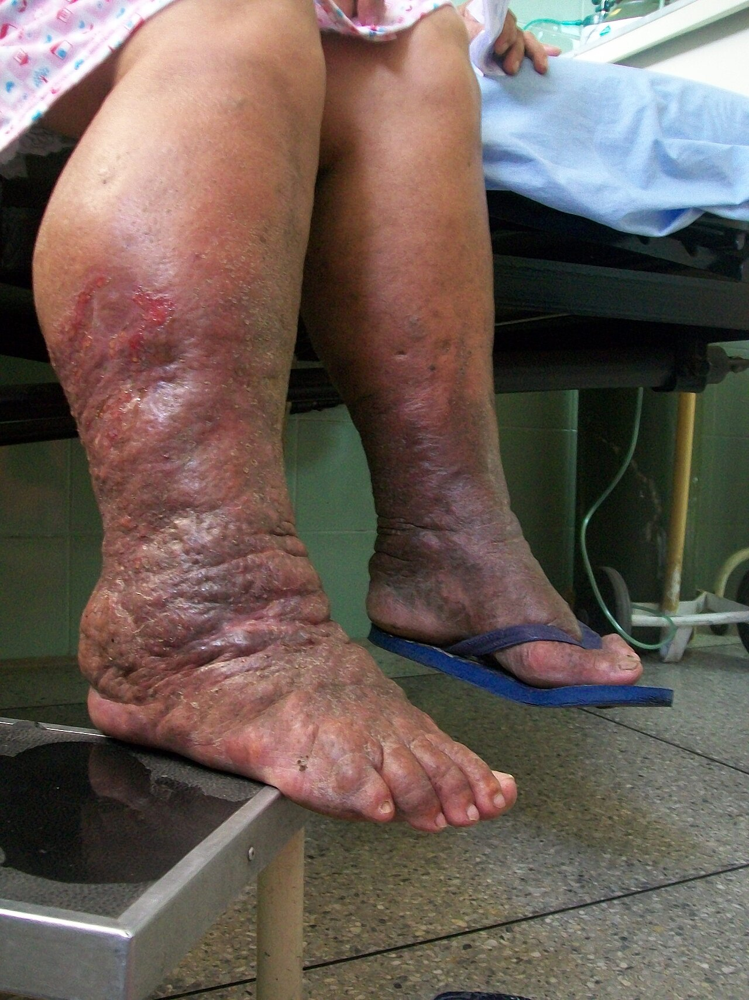
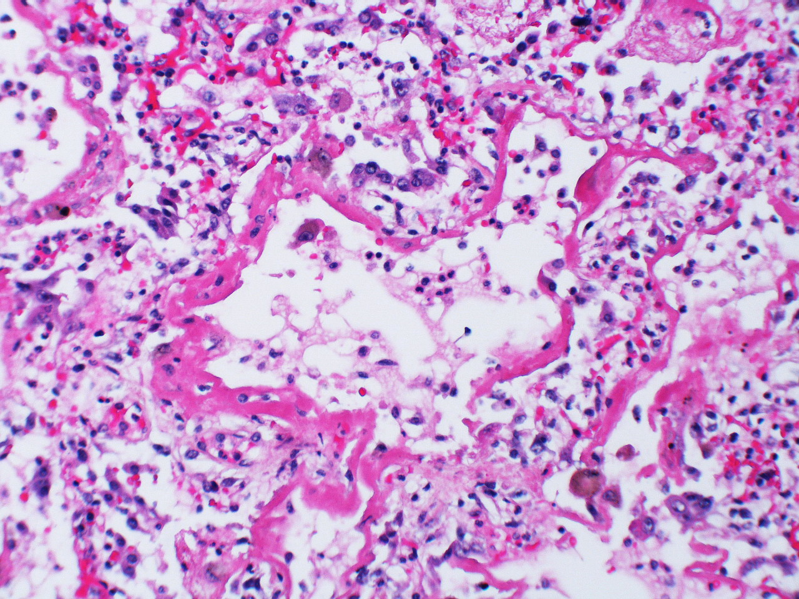
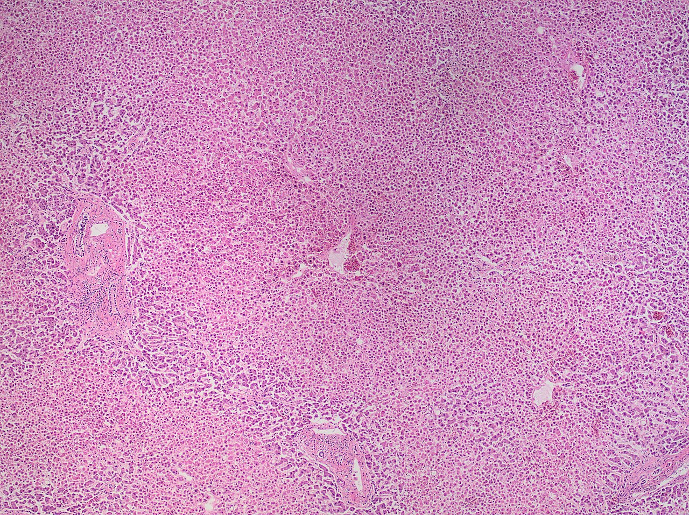
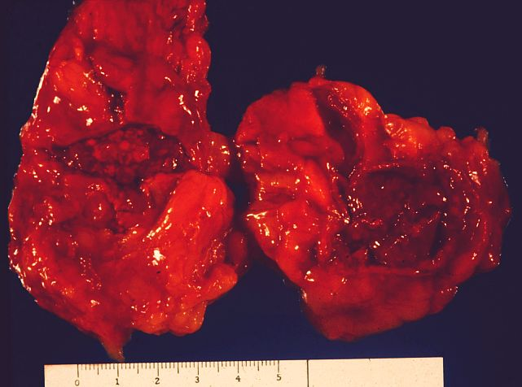

Celkové poruchy krvného obehu
Kým miestna porucha postihne povodie jednej cievy, celková zasiahne obeh ako celok – a s ním všetky orgány naraz. Kapitola vychádza z troch zložiek obehu (pumpa, potrubie, náplň), ukazuje, čo každú z nich rozvráti, a potom sleduje dva obrazy, ktorými sa to prejaví – pomalé zlyhávanie srdca s venostázou, edémom a induráciou orgánov a náhle zlyhanie obehu, kolaps a šok.
Predpoklady: → 6.2 Hypertrofia – tie isté bunky, viac hmoty · → 8.7 Hyperémia – priveľa krvi v riečisku · → 3.6.2 SIRS a sepsa – keď sa obrana obráti proti telu
Odborná kontrola: zatiaľ neprebehla — fakty sú overené len podľa zdrojov uvedených na konci kapitoly · Nahlásiť chybu
9.1Obeh ako pumpa, potrubie a náplň
Krvný obeh tvoria tri zložky, ktoré musia sedieť k sebe: srdce ako pumpa, cievy ako potrubie s nastaviteľným priesvitom a krv ako náplň. Celková porucha obehu vzniká, keď jedna z nich zlyhá natoľko, že to pocíti celé telo – na rozdiel od miestnej poruchy, ktorá sa týka povodia jednej cievy (→ 8.1 Miestny obeh a tri spôsoby, ako zlyhá). Na mape reakcií tkaniva patrí medzi poruchy obehu; v orgánoch po sebe necháva to, čo už poznáme – venostázu, atrofiu, nekrózu a fibrózu.
Obeh = pumpa + potrubie + náplň. Zlyhá pomaly → krv sa hromadí pred zlyhávajúcou komorou (venostáza, edém, indurácia). Zlyhá náhle → tlak padne a orgány ostanú bez krvi (kolaps, šok).
Kapitola má dve časti (Obr. 9.1). Prvá sa pýta, čo obeh rozvráti – podľa toho, ktorá zložka zlyhala (→ 9.2). Druhá sleduje, ako sa to prejaví, a delí sa podľa rýchlosti:
- pomaly – srdce sa najprv prispôsobí (→ 9.3), potom zlyháva a krv sa hromadí v pľúcach alebo vo veľkom obehu (→ 9.4); spoločným menovateľom je edém (→ 9.5),
- náhle – tlak klesne skôr, než sa telo stihne prispôsobiť: kolaps a šok (→ 9.6).
9.2Čo obeh rozvráti: príčiny podľa zložky
Príčiny celkových porúch obehu sa dajú usporiadať podľa toho, ktorá z troch zložiek obehu je chorá – srdce, cievy (prejaví sa to tlakom v malom alebo veľkom obehu), alebo krv. Jednotlivé choroby srdca a ciev patria do špeciálnej patológie; tu ide o to, akým mechanizmom obeh zaťažia.
Srdce zlyhá, lebo slabne sval, kladie odpor chlopňa, bráni mu perikard, alebo sa rozpadne rytmus. Cievy ho preťažia tlakom (pľúcna hypertenzia → pravá komora; systémová → ľavá). Krv objemom alebo zložením.
9.2.1Choroby srdca
Srdce ako pumpa môže zlyhať piatimi spôsobmi – podľa toho, ktorá jeho časť nefunguje:
| Čo je choré | Mechanizmus | Príklady |
|---|---|---|
| sval (myokard) | menej sťahujúcej sa svaloviny alebo slabší sťah | ischemická choroba srdca z aterosklerózy vencovitých tepien a jej najťažšia podoba, infarkt (najčastejšie); myokarditída (napr. reumatická, → 7.9 Granulóm na poškodenej cieve a väzive), kardiomyopatie, ukladanie amyloidu (→ 2.4.5 Amyloidóza) |
| chlopne a endokard | zúžená chlopňa kladie odpor (tlakové preťaženie), nedomykavá vracia krv (objemové preťaženie) | endokarditída, chlopňové chyby; tromby v dutinách (→ 8.3.3) |
| perikard | srdce sa nemôže plniť | výpotok a krv v osrdcovníku až tamponáda, zrasty po zápale (→ 4.6.1 Na seróznych blanách) |
| rytmus | sťahy sú príliš rýchle, pomalé alebo neusporiadané, takže sa komora nestihne naplniť alebo vyprázdniť | poruchy iónov v krvi (draslík, vápnik), ložisko nekrózy alebo zápalu ako zdroj chybných vzruchov, poškodený prevodový systém |
| stavba (vrodené chyby) | krv tečie nesprávnou cestou alebo cez zúženie | pozri nižšie |
Vrodené srdcové chyby sa delia podľa toho, či a ktorým smerom sa krv medzi malým a veľkým obehom mieša:
- bez skratu – prekážka v ceste: zúženie pľúcnice, zúženie alebo koarktácia aorty → tlakové preťaženie komory pred prekážkou,
- ľavo-pravý skrat – defekt predsieňovej alebo komorovej priehradky, otvorená tepnová spojka (ductus arteriosus): okysličená krv sa vracia do pľúc → objemové preťaženie a neskôr pľúcna hypertenzia; dieťa spočiatku nie je cyanotické,
- pravo-ľavý skrat – odkysličená krv obchádza pľúca → cyanóza od narodenia. Najčastejšou cyanotickou chybou je Fallotova tetralógia (pľúcami tečie málo krvi), druhou transpozícia veľkých tepien.
Podiely vrodených srdcových chýb. Bez skratu asi 25 %, s ľavo-pravým skratom 55 %, s pravo-ľavým 20 %. Delenie je doložené, čísla nie.
9.2.2Tlak v malom obehu – pľúcna hypertenzia
Pľúcne riečisko je nízkotlakové a pravá komora tenkostenná; keď odpor v pľúcach stúpne, pravá komora naň nie je stavaná. Pľúcna hypertenzia je stredný tlak v pľúcnici nad 20 mmHg v pokoji, meraný pri katetrizácii pravého srdca.
- Krv sa hromadí za pľúcami – zlyháva ľavé srdce alebo je chorá mitrálna chlopňa; tlak sa prenáša spätne cez pľúcne žily.
- Cievy sa sťahujú pre nedostatok kyslíka – pri chorobách pľúc (chronická bronchitída a obštrukčná choroba pľúc, intersticiálne procesy) a pri spánkovom apnoe; hypoxia v alveole sťahuje priľahlú tepničku, a ak je hypoxický celý orgán, stúpne odpor v celom riečisku.
- Riečisko sa zmenší alebo upchá – ciev je jednoducho menej, takže tá istá krv musí pretiecť užším prierezom. Stáva sa to po opakovanej (sukcesívnej) embólii, keď sa emboly zorganizujú (→ 8.4.2 Pľúcna trombembólia – prototyp), a keď kapiláry zaniknú v jazve: pri fibróze pľúc, pri vaskulitídach a pri kolagenózach.
- Ochorie stena malých pľúcnych tepien – zhrubne a zúži priesvit bez toho, aby bola chorá ľavá komora alebo pľúcne tkanivo. Táto forma sa nazýva artériová; keď sa nenájde ani vrodená, ani získaná príčina, hovorí sa o idiopatickej (v starších textoch „primárna pľúcna hypertenzia“).
Následkom je preťaženie pravej komory – cor pulmonale: zmena pravej komory, ktorej príčina je v pľúcach alebo ich cievach, nie v srdci. Akútne (najčastejšie masívna embólia) sa pravá komora rozšíri a zlyhá; chronicky hypertrofuje (→ 9.3).
Kedysi sa pľúcna hypertenzia definovala stredným tlakom v pľúcnici od 25 mmHg v pokoji (a nad 30 mmHg pri záťaži). Dnes je hranicou viac než 20 mmHg v pokoji – hodnota nad hornou hranicou normy; pre formy vznikajúce pred kapilárami sa žiada aj zvýšený cievny odpor. Záťažové kritérium v pôvodnej podobe zaniklo.
9.2.3Tlak vo veľkom obehu – hypertenzia a hypotenzia
Vo veľkom obehu nesie záťaž ľavá komora. Systémová hypertenzia – opakovane nameraný tlak 140/90 mmHg a viac – je najčastejšou príčinou jej chronického preťaženia; delí sa podľa toho, či sa nájde príčina:
- esenciálna (primárna) – príčina sa nenájde; ide o súhru dedičnosti, telesnej stavby, stravy a stresu a často je súčasťou metabolického syndrómu (obezita, cukrovka, poruchy tukov, zvýšená kyselina močová),
- sekundárna – príčina je známa:
| Skupina | Príčina | Mechanizmus |
|---|---|---|
| obličková (najčastejšia) | choroby obličkového parenchýmu (renoparenchymatózna); zúženie obličkovej tepny (renovaskulárna) | oblička zadržiava soľ a vodu; nedokrvená oblička uvoľňuje renín |
| endokrinná | primárny hyperaldosteronizmus (Connov syndróm), feochromocytóm, Cushingov syndróm, adrenogenitálny syndróm, akromegália | nadbytok hormónu, ktorý zadržiava soľ alebo sťahuje cievy; pri feochromocytóme záchvatovito |
| tehotenská | preeklampsia, eklampsia | — |
Dlhodobo zvýšený tlak poškodzuje aj samotné cievy: stena drobných tepničiek hrubne a sklovatie – hyalínna arterioloskleróza (→ 2.4.2 Hyalínne dystrofie).
Akútne tlak stúpne pri feochromocytóme a pri hypertenznej kríze – vykoľajení dlhodobej hypertenzie, pri ktorom sú náhle ohrozené mozog, srdce a obličky. Chronicky nízky tlak je chorobou sám osebe len zriedka; akútna hypotenzia je kolaps alebo šok (→ 9.6).
Kedysi sa uvádzalo, že viac než 90 % hypertonikov má esenciálnu hypertenziu a sekundárna tvorí 5–10 %. Dnes štúdie, ktoré príčinu hľadajú systematicky, nachádzajú sekundárnu hypertenziu podstatne častejšie – len primárny hyperaldosteronizmus má 5–10 % všetkých hypertonikov. Prakticky: hypertenzia u mladého človeka, náhle zhoršená alebo neodpovedajúca na liečbu je dôvod príčinu hľadať.
Zmeny ciev pri celkových poruchách obehu. Pri akútnom zlyhaní srdca a pri náhlom vzostupe tlaku sa cievy rozširujú; pri dlhodobej hypertenzii hypertrofuje hladký sval steny; pri chronickom zlyhávaní zhrubne intima a média a cievy sa neskôr rozšíria. Doložené je len zhrubnutie steny tepničiek pri hypertenzii (v texte).
9.2.4Krv: objem a zloženie
Tretia zložka obehu ho rozvráti dvoma spôsobmi – zmení sa jej množstvo, alebo to, čo v nej je:
| Zmena | Čo znamená | Čím obeh zaťaží |
|---|---|---|
| pletora | zmnoženie krvi | objemové preťaženie srdca |
| polyglobúlia | zmnoženie erytrocytov | hustá krv tečie ťažko (→ 8.5) |
| anémia | málo hemoglobínu – z nedostatočnej tvorby, zvýšeného rozpadu alebo strát | srdce musí prečerpať viac krvi, aby dodalo rovnako kyslíka – zlyhanie pri vysokom výdaji |
| hydrémia | zmnoženie tekutej zložky – nadmerný príjem, infúzie | objemové preťaženie, edémy |
| dehydratácia | úbytok vody – zahustená krv | menší návrat k srdcu, pri veľkej strate šok |
| hyperproteinémia | nadbytok bielkovín (myelóm) | hustá krv, poškodenie obličiek |
| hypoproteinémia | málo albumínu – straty alebo znížená tvorba | klesá onkotický tlak → edémy (→ 9.5) |
9.3Srdce pod záťažou: dilatácia a hypertrofia
Skôr než srdce zlyhá, mení tvar – a spôsob zmeny prezrádza, ako rýchlo záťaž prišla a aká je. Sekcia pripomína adaptáciu srdca z kapitoly o progresívnych zmenách a dopĺňa, čo sa nájde pri pitve.
Náhla záťaž → dilatácia (na hypertrofiu nie je čas). Trvalá tlaková → koncentrická hypertrofia; trvalá objemová → excentrická. Váha a hrúbka steny povedia, ktorá komora niesla záťaž: ľavá = veľký obeh, pravá = pľúca.
Normálne srdce dospelého váži 300–360 g u mužov a 250–320 g u žien; stena ľavej komory má 13–15 mm, pravej 3–5 mm. Čím viac krvi do komory pritečie a natiahne jej vlákna, tým silnejšie sa stiahne (Frankov-Starlingov zákon) – ale len po určitú hranicu.
| Dilatácia | Koncentrická hypertrofia | Excentrická hypertrofia | |
|---|---|---|---|
| Kedy | náhle preťaženie – rozsiahly infarkt, masívna embólia do pľúc, akútna myokarditída | chronické tlakové preťaženie – hypertenzia, zúžená chlopňa | chronické objemové preťaženie – nedomykavá chlopňa, skrat, anémia; alebo vyčerpaná koncentrická hypertrofia |
| Čo sa deje | vlákna sa natiahnu, stena stenčí | sarkoméry pribúdajú vedľa seba → stena hrubne, dutina sa nezväčší | sarkoméry pribúdajú za sebou → dutina sa rozširuje, stena je primerane hrubá |
| Pri pitve | ochabnuté, guľovité srdce s tenkou stenou; viac vpravo, kde je stena tenšia | ťažké srdce s hrubou tuhou stenou a úzkou dutinou | ťažké a veľké srdce so širokou dutinou |
Ktorá komora je zmenená, ukazuje na príčinu: hypertrofia ľavej komory znamená záťaž vo veľkom obehu (hypertenzné srdce – cor hypertonicum), hypertrofia pravej záťaž v pľúcach (cor pulmonale), hypertrofia oboch buď dve príčiny, alebo záťaž prenesenú z ľavej strany cez pľúca na pravú. Hmotnosť nad 400 g u muža a 350 g u ženy je už hraničná; veľmi ťažké srdce so zhrubnutými oboma komorami sa tradične nazýva bovinné (cor bovinum). Mechanizmus hypertrofie, jej hranicu a bludný kruh, ktorým prechádza do zlyhania, rozoberá → 6.2 Hypertrofia – tie isté bunky, viac hmoty.

Pri pitve sa srdce váži a meria – hmotnosť a hrúbka steny komôr sú objektívny doklad dlhodobého preťaženia. V mikroskope má hypertrofovaný kardiomyocyt hrubšie vlákno a veľké hranaté („krabicové“) jadro.
Bovinné srdce. Ako hranica sa uvádza hmotnosť nad 600 g. Názov je bežný, číslo sa nepodarilo doložiť.
9.4Zlyhanie srdca: krv sa hromadí pred komorou, ktorá nestačí
Zlyhanie srdca je stav, keď srdce nedokáže prečerpať toľko krvi, koľko tkanivá potrebujú, alebo to dokáže len za cenu zvýšeného plniaceho tlaku. Má dva dôsledky, ktoré idú spolu: dopredu sa do tepien dostáva málo krvi, dozadu sa krv hromadí v žilách pred komorou, ktorá nestíha. Morfológiu určuje najmä to druhé – a líši sa podľa toho, ktorá komora zlyháva.
Zlyhá ľavá komora → krv stojí v pľúcach (edém, dýchavica, siderofágy). Zlyhá pravá → krv stojí vo veľkom obehu (pečeň, slezina, opuchy, výpotky). Dlhá venostáza = hypoxia → atrofia → fibróza (indurácia). Ľavé zlyhanie časom strhne aj pravé.
Zlyhanie srdca sa triedi podľa štyroch na sebe nezávislých hľadísk:
| Hľadisko | Delenie |
|---|---|
| strana | ľavostranné · pravostranné · obojstranné |
| čas | akútne (hodiny až dni – dilatácia, edém pľúc, šok) · chronické (týždne až roky – hypertrofia, venostáza, indurácia) |
| výdaj | so zníženým výdajom (slabá pumpa – väčšina prípadov) · so zvýšeným výdajom (pumpa je zdravá, ale požiadavky priveľké: anémia, artériovenózne skraty, nadbytok tekutín) |
| stav | kompenzované (bez ťažkostí v pokoji) · dekompenzované |
Kedysi sa rozlišovalo „systolické“ a „diastolické“ zlyhanie. Dnes sa používa ejekčná frakcia ľavej komory – podiel krvi, ktorý komora pri sťahu vypudí: zlyhanie so zníženou (≤ 40 %), mierne zníženou (41–49 %) a zachovanou ejekčnou frakciou (≥ 50 %). Pri zachovanej frakcii komora vypudzuje normálny podiel, ale je tuhá a zle sa plní – typicky hypertrofovaná komora hypertonika. Morfologický obraz venostázy je pri všetkých rovnaký.
9.4.1Kompenzácia a bod, v ktorom sa obráti proti srdcu
Pokles výdaja telo vyrovnáva tými istými mechanizmami, ktorými odpovedá na stratu krvi – a práve to je problém, lebo krvi je dosť, slabá je pumpa.
↓ srdcový výdaj → baroreceptory a nedokrvená oblička → sympatikus (rýchlejší pulz, silnejší sťah, stiahnuté cievy) + renín → angiotenzín → aldosterón (oblička zadrží soľ a vodu) → viac krvi sa vracia k srdcu → komora sa viac naplní a podľa Frankovho-Starlingovho zákona vypudí viac → výdaj sa načas upraví
Zadržaná tekutina a stiahnuté cievy však zvyšujú záťaž srdca, ktoré je už poškodené: komora sa rozširuje, napätie jej steny rastie, sval spotrebuje viac kyslíka a slabne ďalej ⟳. Bod zvratu nastane, keď ďalšie plnenie už silu sťahu nezvýši – komora je za vrcholom Frankovej-Starlingovej krivky a každý mililiter zadržanej tekutiny sa prejaví len ako vyšší tlak v žilách, teda ako venostáza a edém. Z kompenzovaného zlyhania sa stáva dekompenzované; preto sa lieči práve tlmením sympatika a aldosterónu a odvodnením.
9.4.2Ľavostranné zlyhanie: krv stojí v pľúcach
Ľavá komora zlyháva najčastejšie pre ischemickú chorobu srdca a hypertenziu, ďalej pre chyby aortálnej a mitrálnej chlopne. Krv, ktorú neprečerpá, sa hromadí v ľavej predsieni, pľúcnych žilách a kapilárach.
ľavá komora neprečerpá → ↑ tlak v ľavej predsieni a pľúcnych žilách → ↑ hydrostatický tlak v pľúcnych kapilárach → tekutina sa pretlačí do interstícia a keď lymfa nestíha, do alveol → edém pľúc → plyny sa cez tekutinu vymieňajú horšie → dýchavica, hypoxémia
- MA akútne (edém pľúc): obe pľúca symetricky zväčšené a ťažké (jedna váži aj okolo 800 g), cestovité; z reznej plochy vyteká množstvo spenenej tekutiny – pena vzniká zmiešaním tekutiny so vzduchom. V pohrudnicových dutinách často číry výpotok (hydrotorax).
- MA chronicky: pľúca sú tuhšie a hrdzavohnedé – hrdzavá indurácia. Modré nie sú, lebo sú stále vo styku so vzduchom.
- MI: alveolové priehradky rozšírené, kapiláry v nich preplnené krvou; v alveolách ružová edémová tekutina a erytrocyty z prasknutých kapilár. Pri dlhom trvaní makrofágy plné hemosiderínu – siderofágy („bunky srdcového zlyhania“) – a zhrubnuté, väzivom spevnené priehradky.

Perlsova reakcia farbí hemosiderín v siderofágoch namodro (→ 0.6 Farbenia a histochémia) – odlíši ich od makrofágov s vdýchnutým uhlíkom, ktoré sú čierne a železo neobsahujú.
Od nálezu k pacientovi. Tekutina v pľúcach = dýchavica – najprv pri námahe, potom v ľahu, keď sa krv z nôh presunie do hrudníka (ortopnoe; pacient spí na viacerých vankúšoch), a záchvatovito v noci (paroxyzmálna nočná dýchavica, starším názvom srdcová astma). Pri edéme pľúc pacient vykašliava spenené, niekedy ružové spútum; pri dlhej venostáze je spútum hrdzavé od siderofágov. Dopredu: únava, slabosť, zhoršená činnosť mozgu a obličiek.
9.4.3Pravostranné zlyhanie: krv stojí vo veľkom obehu
Pravá komora zlyháva najčastejšie preto, že zlyhala ľavá a tlak sa preniesol cez pľúca; samostatne zlyháva pri chorobách pľúc a ich ciev (cor pulmonale) a pri niektorých chlopňových a vrodených chybách. Krv sa hromadí v dutých žilách a vo všetkom, čo do nich ústi – následky sa preto delia podľa orgánu:
| Orgán | Čo uvidíš | Prečo |
|---|---|---|
| pečeň | zväčšená, ťažká (okolo 2 000 g a viac), s tupým okrajom; na reze muškátová kresba – tmavočervené bodky a sieť striedané žltkastými políčkami | krv z pečene odteká centrálnymi žilami do dolnej dutej žily; pri venostáze sa preplnia sínusoidy v strede lalôčika, kde je krv aj tak najchudobnejšia na kyslík – hepatocyty tam atrofujú a odumierajú (tmavé), na obvode lalôčika prežívajú, ale tukovatejú (žlté; → 2.3.1 Steatóza (stukovatenie)) |
| slezina | zväčšená (500–600 g; norma 150–200 g), tuhá, tmavomodročervená – cyanotická indurácia | preplnené sínusy, neskôr zmnožené väzivo |
| obličky | zväčšené, tuhé, tmavofialové; bielkovina v moči | venostáza a znížený prietok |
| tráviaca rúra | prekrvená opuchnutá sliznica | pacient nemá chuť do jedla, nadúva ho |
| podkožie a dutiny | opuchy, výpotky (ascites, hydrotorax, hydroperikard) až anasarka | → 9.5 |
| mozog | ťažší, opuchnutý, prekrvený | venostáza a hypoxia |
Pečeň ukazuje aj vývoj v čase:
| Trvanie | Voľným okom | V mikroskope |
|---|---|---|
| akútna venostáza (hodiny až dni) | zväčšená, tmavočervená, z rezu vyteká krv | rozšírené sínusoidy v strede lalôčikov plné erytrocytov |
| chronická venostáza (týždne až mesiace) | muškátová pečeň | atrofia až nekróza hepatocytov okolo centrálnej žily, steatóza na obvode, siderofágy |
| roky | menšia, tuhá, jemne zrnitá – kardiálna fibróza („srdcová cirhóza“) | väzivo okolo centrálnych žíl, ktoré sa postupne spája medzi lalôčikmi |


Od pacienta k nálezu. Preplnené krčné žily, zväčšená bolestivá pečeň, opuchy členkov, ktoré sa večer zhoršujú, pribúdanie na váhe (zadržaná voda), ascites. Spoločné pre zlyhanie oboch komôr je nočné močenie (nyktúria – v ľahu sa tekutina z opuchov vracia do obehu a obličky ju vylúčia) a znaky aktivovaného sympatika – rýchly pulz, studená spotená koža. Patológ pri pitve rozlišuje, čo je základná choroba (napr. hypertenzia s hypertrofiou ľavej komory), čo jej následok (venostáza pľúc, pečene) a čo bezprostredná príčina smrti (edém pľúc, arytmia, embólia).
9.4.4Čo má venostáza spoločné: cyanóza a indurácia
Bez ohľadu na orgán sa dlhá venostáza prejaví dvoma znakmi – farbou a konzistenciou –, ktoré majú spoločnú príčinu: krv stojí a odovzdá viac kyslíka než obvykle.
- Cyanóza je modrasté sfarbenie kože a slizníc, viditeľné, keď je v krvi kapilár aspoň 50 g/l hemoglobínu bez kyslíka. Pri zlyhaní srdca je najprv na okrajových častiach tela – končeky prstov, pery, ušné lalôčiky –, kde krv tečie najpomalšie. Dlhotrvajúca cyanóza prestavia koncové články prstov na paličkovité.
- Indurácia je stvrdnutie orgánu drobnou fibrózou: hypoxia poškodzuje bunky, makrofágy upratujú výrony a miesto zaniknutého tkaniva nahrádza väzivo (→ 5.9 Chronický zápal – keď poškodenie a oprava bežia naraz). V slezine, obličkách a pečeni je indurácia cyanotická; v pľúcach hrdzavá, lebo tam krv ostáva okysličená a farbu dáva hemosiderín.
Anemický pacient cyanotický nebude, ani keď je ťažko hypoxický – nemá dosť hemoglobínu, aby ho 50 g/l bolo bez kyslíka. Naopak pri polyglobúlii sa cyanóza objaví ľahko. Cyanóza teda meria množstvo odkysličeného hemoglobínu, nie hĺbku hypoxie.
9.4.5Od ľavej komory k obom: postup zlyhania
Obeh je jeden okruh, takže zlyhanie jednej polovice srdca skôr či neskôr zaťaží druhú. Najčastejší sled vychádza z ľavej komory:
záťaž ľavej komory (hypertenzia, chlopňa, ischémia) → hypertrofia ľavej komory → vyčerpanie: komora sa rozširuje a zlyháva → krv stojí v pľúcach → trvalo zvýšený tlak v pľúcnych cievach, ktorých stena hrubne (pľúcna hypertenzia) → hypertrofia pravej komory → zlyhanie pravej komory → obojstranné zlyhanie s rozšírením oboch komôr
Hranica reverzibility leží na začiatku tohto reťazca: hypertrofia sama je v princípe vratná, ak záťaž zmizne (vyliečená hypertenzia, vymenená chlopňa); po zániku kardiomyocytov a ich náhrade väzivom už nie.
9.5Edém – tekutina mimo ciev a buniek
Edém (opuch) je nahromadenie tekutiny v medzibunkovom priestore tkaniva; to isté v telovej dutine je výpotok. Voda tvorí 50–70 % hmotnosti tela: dve tretiny sú v bunkách, zvyšok mimo nich – a z neho len malá časť v plazme (asi 5 % všetkej vody). Edém je teda presun tekutiny z plazmy do interstícia, a keďže obe oddeľuje len stena kapiláry, všetky jeho druhy sa dajú odvodiť z toho, ktorá zo síl na tejto stene sa zmenila.
Tekutinu z kapiláry vytláča hydrostatický tlak, v cieve ju drží albumín, prebytok odvádza lymfa, stena má byť tesná. Edém = porucha jednej z týchto štyroch vecí; zosilňuje ho oblička zadržiavaním soli a vody.
- ↑ hydrostatický tlak v kapilárach – krv neodteká: miestne pri uzávere žily (→ 8.7 Hyperémia – priveľa krvi v riečisku), celkovo pri zlyhávaní srdca. Tekutina je chudobná na bielkoviny – transsudát.
- ↓ onkotický tlak plazmy – chýba albumín, ktorý vodu v cieve drží: stráca sa močom (nefrotický syndróm), alebo sa netvorí (cirhóza pečene). Tiež transsudát.
- Viazne lymfa – tekutina, ktorá sa z kapilár prefiltruje, sa nemá kadiaľ vrátiť: lymfedém. V tkanive ostáva aj bielkovina, ktorú lymfa odvádza.
- Netesná stena – pri zápale mediátory otvoria štrbiny medzi bunkami endotelu a unikajú aj bielkoviny: exsudát (→ 3.3 Cievna fáza – exsudácia).
- Zosilňovač: zadržiavanie soli a vody. Pri zlyhaní srdca aj pri hypoproteinémii je oblička horšie prekrvená → renín, angiotenzín, aldosterón → zadržaná soľ a voda → ešte viac tekutiny, ktorá sa pretlačí do tkanív. Samostatne pri chorobách obličiek, ktoré soľ nevylučujú.
Kedysi sa učilo, že tekutina sa na tepnovom konci kapiláry filtruje von a na žilovom konci ju onkotický tlak nasáva späť. Dnes (revidovaný Starlingov princíp) sa za polopriepustnú bariéru považuje vrstva glykokalyxu na vnútornom povrchu endotelu: vo väčšine tkanív kapilára po celej dĺžke mierne filtruje, spätné vstrebávanie je len prechodné a prefiltrovaná tekutina sa do krvi vracia lymfou. Onkotický tlak filtráciu brzdí, ale neobracia. Vysvetľuje to, prečo podanie bielkovín do žily opuch neodstráni a prečo je lymfa pre rovnováhu tekutín nevyhnutná.
Druhy edému sa na pacientovi dajú rozoznať podľa toho, kde sa objavia a ako sa správajú:
| Kardiálny (venostatický) | Hypoproteinemický | Lymfedém | Zápalový | |
|---|---|---|---|---|
| Príčina | ↑ hydrostatický tlak + zadržiavanie soli | ↓ albumín | upchaté alebo odstránené lymfatické cesty | ↑ priepustnosť steny |
| Tekutina | transsudát | transsudát | bohatá na bielkoviny | exsudát |
| Kde | podľa gravitácie: členky u chodiaceho, kríže u ležiaceho; výpotky v dutinách | všade, najskôr v riedkom väzive – okolo očí | jedna končatina alebo jej časť | v mieste zápalu |
| Správanie | po zatlačení ostane jamka | po zatlačení ostane jamka | spočiatku mäkký, neskôr tuhý – bielkoviny dráždia väzivo k fibróze (elefantiáza) | teplý, červený, bolestivý |
| Typicky | zlyhanie pravej komory | nefrotický syndróm, cirhóza | po odstránení pazuchových uzlín, pri nádore v uzlinách; v trópoch filarióza | → 4.3 Serózny zápal |
Rozsiahly edém celého podkožia sa nazýva anasarka; transsudát v dutinách hydrotorax (pohrudnica), hydroperikard (osrdcovník) a ascites (brušná dutina). Jamka po zatlačení sa objaví až neskoro – interstícium pojme niekoľko litrov tekutiny bez viditeľného opuchu, takže prvým znakom zadržiavania tekutín je vzostup hmotnosti.


Čo edém spôsobí, závisí od miesta. V podkoží je skôr signálom choroby srdca, obličiek alebo pečene a zhoršuje hojenie rán; v pľúcach bráni výmene plynov a v mozgu, ktorý je v pevnej lebke, zvyšuje vnútrolebkový tlak – tam ohrozuje život. Opuch jednej nohy je trombóza alebo lymfedém, kým sa nedokáže opak; opuch oboch má príčinu celkovú.
Opakom edému je dehydratácia – úbytok vody z tela (malý príjem, hnačky a vracanie, potenie, popáleniny, straty močom pri cukrovke). Krv sa zahustí a horšie tečie, tkanivá strácajú napätie: koža ostáva po stlačení v riase, oči sú vpadnuté, črty tváre zaostrené a serózne blany pri pitve lepkavé.
9.6Kolaps a šok – keď obeh zlyhá náhle
Náhly pokles tlaku má dve podoby, ktoré vyzerajú na začiatku podobne, ale končia opačne. Kolaps je krátky výpadok regulácie, po ktorom sa obeh sám upraví a v orgánoch neostane nič. Šok je zlyhanie obehu, ktoré trvá, poškodzuje orgány a bez zásahu sa prehlbuje. Rozdiel je v jedinom: či sa obeh vráti skôr, než bunky začnú z nedostatku kyslíka odumierať.
Šok = prietok tkanivami nestačí bunkám na kyslík. Štyri príčiny: málo krvi, slabá pumpa, prekážka, príliš široké cievy. Najprv kompenzácia (centralizácia obehu), potom acidóza cievy otvorí a kruh sa uzavrie ⟳ → zlyhanie orgánov.
9.6.1Kolaps: mozog na chvíľu bez krvi
Kolaps (synkopa) je prechodná strata vedomia a svalového napätia zo zníženého prietoku krvi mozgom, ktorá sa sama upraví – pacient padne, tým sa mozog dostane na úroveň srdca a prietok sa obnoví. Vzniká dvoma cestami, ktoré sa líšia tým, či zlyhalo stiahnutie ciev, alebo ho reflex sám zrušil:
- ortostatický – po postavení alebo pri dlhom nehybnom státí ostane krv v žilách dolných končatín (nepracuje svalová pumpa a cievy sa nestiahnu dosť rýchlo) → menší návrat k srdcu → menší výdaj → mozog,
- vazovagálny – bolesť, strach, pohľad na krv alebo podráždenie zakončení blúdivého nervu spustia reflex, ktorý naraz spomalí srdce a rozšíri cievy.
Od šoku ho odlišuje trvanie (sekundy až minúty) a to, že po ňom neostáva funkčné ani morfologické poškodenie.
Odkiaľ sa dá vyvolať vazovagálny reflex. Úderom na nadbrušie (plexus solaris), poranením semenníkov, podráždením zvukovodu. Mechanizmus reflexu je doložený, tieto miesta nie.
9.6.2Šok: štyri príčiny
Šok je stav, pri ktorom prietok krvi tkanivami klesne natoľko, že bunky trpia nedostatkom kyslíka. Príčiny sa delia podľa toho, ktorá zložka obehu zlyhala – tie isté tri ako na začiatku kapitoly, pričom pumpa môže zlyhať sama alebo pre prekážku:
| Typ | Čo zlyhalo | Príčiny | Čím sa prezradí |
|---|---|---|---|
| hypovolemický | náplň – málo krvi alebo plazmy | krvácanie; popáleniny (strata plazmy); hnačky, vracanie, ťažká dehydratácia | studená, bledá, lepkavá koža, rýchly slabý pulz, prázdne žily |
| kardiogénny | pumpa – sval alebo rytmus | najčastejšie rozsiahly infarkt myokardu; ruptúra steny alebo chlopne, ťažká arytmia, myokarditída | rovnaká koža, ale preplnené krčné žily a edém pľúc |
| obštrukčný | pumpa je zdravá, ale krv cez ňu neprejde | masívna embólia do pľúc, tamponáda srdca, pretlakový pneumotorax | preplnené krčné žily; náhly začiatok |
| distribučný | potrubie – cievy sa rozšírili a krv ich nevyplní | septický (najčastejší), anafylaktický, neurogénny | na začiatku teplá, červená koža |
Tri podoby distribučného šoku majú rovnaký výsledok – riečisko je zrazu väčšie než objem krvi („vykrvácanie do vlastných ciev“) –, ale inú príčinu rozšírenia (zriedkavejšie ho vyvolá aj nedostatočnosť nadobličiek alebo predávkovanie liekmi, ktoré cievy rozširujú):
- septický – mediátory zápalu pri infekcii rozšíria cievy a zvýšia ich priepustnosť v celom tele naraz; pridáva sa útlm srdca a DIC (→ 3.6.2 SIRS a sepsa – keď sa obrana obráti proti telu, → 8.9.5 DIC – trombóza a krvácanie naraz),
- anafylaktický – alergén u senzibilizovaného človeka cez IgE vysype žírne bunky; histamín rozšíri cievy a otvorí ich stenu v priebehu minút,
- neurogénny – poranenie miechy (najmä krčnej a hornej hrudnej) preruší sympatikové dráhy k cievam; cievy ochabnú a srdce, ktoré ostalo len pod vplyvom blúdivého nervu, sa spomalí (bradykardia) – šok s pomalým pulzom.
Kedysi sa rozlišovali tri typy šoku a embólia do pľúc či tamponáda sa radili ku kardiogénnemu. Dnes sa uvádzajú štyri: obštrukčný šok je vyčlenený, lebo srdcový sval je pri ňom zdravý a liečba je iná – treba odstrániť prekážku (rozpustiť embolus, vypustiť osrdcovník), nie podporovať sval.
Vazogénny šok. Štvrtá podoba distribučného šoku popri septickom, anafylaktickom a neurogénnom – rozšírenie ciev po liekoch. Že lieky rozširujúce cievy môžu šok vyvolať, doložené je; samostatný názov nie.
9.6.3Od kompenzácie k bludnému kruhu
Šok prebieha v troch štádiách, ktoré na seba nadväzujú; hranice medzi nimi určuje to, či kompenzácia ešte stačí a či je poškodenie buniek vratné.
| Štádium | Čo sa deje | Čo vidno | Vratnosť |
|---|---|---|---|
| kompenzované | sympatikus a katecholamíny zrýchlia srdce a stiahnu cievy kože, svalov, čriev a obličiek; renín–angiotenzín–aldosterón a antidiuretický hormón zadržia soľ a vodu; tekutina sa z tkanív presúva do ciev | tlak ešte drží; rýchly pulz, bledá studená koža, málo moču | úplná |
| progresívne | tkanivá bez kyslíka prechádzajú na anaeróbnu glykolýzu → laktát → acidóza; kyslé prostredie a mediátory otvoria drobné tepničky, kompenzácia padá | tlak klesá, vedomie sa kalí, moč ustáva; laktát v krvi stúpa | ešte možná |
| ireverzibilné | bunky odumierajú; rozšírené venuly zadržia krv, poškodený endotel spúšťa zrážanie, cez nedokrvenú črevnú stenu prechádzajú baktérie | zlyhanie obličiek, pľúc, srdca, pečene – multiorgánové zlyhanie | nie |
Zmysel prvého štádia je centralizácia obehu: cievy mozgu a srdca sa na povel sympatika sťahujú oveľa menej než ostatné, takže zmenšený výdaj sa presmeruje k dvom orgánom, ktoré neznesú ani minúty bez kyslíka. Cenou je ischémia všetkého ostatného – a tá po čase kompenzáciu zničí (Obr. 9.9):
↓ tlak → stiahnutie periférnych ciev → tkanivá bez kyslíka → laktát, acidóza, rozpad buniek → mediátory a kyslé prostredie rozšíria tepničky a zvýšia priepustnosť kapilár → krv stojí v mikrocirkulácii a tekutina uniká do tkanív → ešte menší návrat k srdcu → ↓ výdaj; nedokrvený myokard slabne ⟳ → ↓ tlak
Bod zvratu je chvíľa, keď tlak klesne pod hodnotu, pri ktorej si mozog a srdce ešte vedia prietok udržať samy: od nej slabne aj sval, ktorý má obeh zachrániť, a doplnenie tekutín už tlak nezdvihne.
Šok sa má rozpoznať v prvom štádiu, keď je tlak ešte normálny: rýchly pulz, studená spotená koža, nepokoj a klesajúce močenie u pacienta po úraze alebo s krvácaním znamenajú, že kompenzácia už beží naplno. Stúpajúci laktát je laboratórny dôkaz, že tkanivá prešli na anaeróbny metabolizmus. Pri septickom šoku tento obraz na začiatku chýba – koža je teplá a červená –, o to ľahšie sa prehliadne.
Hranica autoregulácie. Mozog, srdce a nadobličky si majú udržať dostatočné prekrvenie až do stredného tlaku asi 50–60 mmHg; pod ním autoregulácia zlyháva. Princíp je v texte, číslo sa nepodarilo doložiť.
9.6.4Čo šok zanechá v orgánoch
Morfológia šoku je morfológia ischémie mnohých orgánov naraz, ku ktorej sa pri sepse a úrazoch pridáva poškodenie endotelu. Jednotlivé nálezy nie sú pre šok špecifické – diagnózu robí ich kombinácia u pacienta, ktorý šok prežil aspoň niekoľko hodín. Orgány sú zoradené podľa toho, ako rozhodujú o prežití:
| Orgán | Čo uvidíš | Prečo |
|---|---|---|
| obličky – „šoková oblička“ | MI akútna tubulárna nekróza: odumreté a odlúpené bunky najmä proximálnych tubulov, zrnité valce v priesvitoch, opuch interstícia; klbká ušetrené | tubuly majú vysokú spotrebu kyslíka a pri centralizácii obehu stratia prietok ako prvé; najčastejšia príčina akútneho zlyhania obličiek v nemocnici |
| pľúca – „šoková pľúca“ | ťažké, tuhé, prekrvené; MI difúzne alveolárne poškodenie: edém, krvácanie, mikrotromby a hyalínne membrány – ružové blany z bielkovín a zvyškov buniek vystieľajúce alveoly | poškodený endotel a výstelka alveol prepustia bielkoviny; typické pre septický šok a úrazy, pri kardiogénnom a hypovolemickom zriedkavé – pľúca sú na hypoxiu odolné. Klinicky syndróm akútnej dychovej tiesne (ARDS) |
| mozog | opuch; pri dlhšom šoku nekrózy neurónov, najskôr v rozvodiach (→ 8.6.4 Infarkt bez uzáveru tepny) | neuróny znesú ischémiu len minúty; chránené sú najdlhšie, ale poškodenie je nevratné |
| srdce | drobné ložiská nekrózy kardiomyocytov, najmä pod endokardom | vnútorná vrstva steny je najďalej od vencovitých tepien |
| pečeň | nekrózy hepatocytov v stredoch lalôčikov, steatóza | stred lalôčika dostáva krv ako posledný |
| tráviaca rúra | stresové erózie a vredy žalúdka a dvanástnika, krvácanie do sliznice; v čreve až hemoragické nekrózy | ischemická sliznica stratí ochranu pred kyselinou; poškodenou stenou prestupujú baktérie do krvi |
| nadobličky | kôra chudobná na tuky (vyčerpané zásoby hormónov); pri sepse krvácania až úplné prekrvácanie oboch nadobličiek | stresová odpoveď; pri meningokokovej sepse DIC |
| pankreas | ložiskové nekrózy | ischémia |



Hranica reverzibility šoku je bunková, nie orgánová. Tubuly obličky, hepatocyty a sliznica čreva po prežitom šoku zregenerujú, lebo ich bunky sa delia a kostra tkaniva ostala (→ 5.2 Kto sa vie obnoviť: bunkový cyklus a kostra tkaniva); neuróny a kardiomyocyty nie. Preto pacient po šoku môže mať týždeň dialýzu a odísť so zdravými obličkami – a zároveň s trvalým poškodením mozgu.
Čo píše patológ. Šok je mechanizmus smrti, nie základná choroba: záver pitvy uvádza, čo šok vyvolalo (krvácajúci vred, infarkt, zápal pobrušnice), a orgánové nálezy ako jeho dôkaz. Chýbanie nálezov šok nevylučuje – pri smrti v priebehu minút až hodín sa morfologické zmeny nestihnú vyvinúť.
Šoková oblička voľným okom. Bledá kôra a tmavočervený okraj drene. Mikroskopický obraz je doložený (v tabuľke), tento makroskopický opis nie.
9.7Súhrn a rýchle rozlíšenie
| Obraz | Čo zlyhalo | Čo nájdeš | Čo rozhoduje |
|---|---|---|---|
| hypertrofia ľavej komory | veľký obeh kladie odpor (hypertenzia, aortálna chlopňa) | ťažké srdce, hrubá stena ľavej komory | či záťaž zmizne skôr, než kardiomyocyty zaniknú |
| cor pulmonale | odpor v pľúcach (choroby pľúc, embólie) | akútne rozšírená, chronicky hypertrofovaná pravá komora | — |
| zlyhanie ľavej komory | krv stojí v pľúcach | edém pľúc; chronicky hrdzavá indurácia, siderofágy | dýchavica; časom strhne pravú komoru |
| zlyhanie pravej komory | krv stojí vo veľkom obehu | muškátová pečeň → kardiálna fibróza, cyanotická indurácia sleziny a obličiek, opuchy, výpotky | — |
| edém | ↑ hydrostatický tlak, ↓ albumín, lymfa, stena | transsudát (jamka, podľa gravitácie alebo okolo očí), tuhý lymfedém, zápalový exsudát | miesto: pľúca a mozog ohrozujú život |
| kolaps | krátky výpadok regulácie | nič | upraví sa sám |
| šok ⟳ | málo krvi, slabá pumpa, prekážka, široké cievy | tubulárna nekróza, hyalínne membrány v pľúcach, nekrózy v stredoch pečeňových lalôčikov, stresové vredy | zásah pred ireverzibilným štádiom; regenerujú tubuly a pečeň, nie mozog a srdce |
9.8Otázky na zopakovanie
Prečo sú pľúca pri chronickom zlyhávaní ľavej komory hrdzavé, a slezina pri zlyhávaní pravej modrá?
V oboch stojí krv a kapiláry prepúšťajú erytrocyty. V pľúcach je tkanivo stále v styku so vzduchom, takže cyanóza nevznikne a farbu určuje hemosiderín v siderofágoch; v slezine krv odovzdá kyslík a ostáva tmavá – cyanotická indurácia. → 9.4.4 Čo má venostáza spoločné: cyanóza a induráciaPrečo má muškátová pečeň tmavé stredy lalôčikov a žlté okraje?
Krv odteká z lalôčika centrálnou žilou; pri venostáze sa preplnia sínusoidy okolo nej, kde je krv aj normálne najchudobnejšia na kyslík – hepatocyty tam atrofujú a odumierajú (tmavočervené). Na obvode prežívajú, ale z hypoxie tukovatejú (žlté). → 9.4.3 Pravostranné zlyhanie: krv stojí vo veľkom obehuPacient s dlhoročnou hypertenziou má pri pitve srdce 520 g so stenou ľavej komory 20 mm a zhrubnutú aj pravú komoru. Zoraď deje, ktoré k tomu viedli.
Tlaková záťaž → koncentrická hypertrofia ľavej komory → vyčerpanie a zlyhávanie → venostáza v pľúcach → pľúcna hypertenzia → hypertrofia pravej komory. Normálna hmotnosť je 300–360 g a stena ľavej komory 13–15 mm. → 9.4.5 Od ľavej komory k obom: postup zlyhaniaPrečo zadržiavanie soli a vody, ktoré má pri zlyhaní srdca pomôcť, pacientovi napokon škodí?
Mechanizmus je stavaný na stratu krvi: viac tekutiny zvýši plnenie komory a tým výdaj. Zlyhávajúca komora je však za vrcholom Frankovej-Starlingovej krivky – ďalšie plnenie sťah nezosilní, len zvýši tlak v žilách → venostáza a edém ⟳. → 9.4.1 Kompenzácia a bod, v ktorom sa obráti proti srdcuDvaja pacienti majú opuchy: jeden členkov, ktoré sa večer zhoršujú, druhý viečok hneď ráno. Čo je príčinou u ktorého?
Opuch podľa gravitácie je z vysokého hydrostatického tlaku v žilách – zlyhávanie pravej komory. Opuch v riedkom väzive okolo očí bez závislosti od polohy je z nízkeho albumínu – nefrotický syndróm alebo choroba pečene. Oboje je transsudát. → 9.5 Edém – tekutina mimo ciev a buniekPrečo je lymfedém po rokoch tuhý a nezostáva v ňom jamka, kým kardiálny edém ostáva mäkký?
Lymfa odvádza z tkaniva aj bielkoviny. Keď viazne, bielkoviny ostávajú v interstíciu a dráždia fibroblasty k tvorbe väziva – tkanivo fibrotizuje (elefantiáza). Transsudát pri zlyhaní srdca bielkoviny neobsahuje. → 9.5 Edém – tekutina mimo ciev a buniekČím sa pri lôžku odlíši septický šok od hypovolemického v prvých hodinách – a prečo?
Pri hypovolemickom sympatikus stiahne cievy kože: je bledá, studená a lepkavá. Pri septickom mediátory zápalu cievy rozšíria, takže koža je teplá a červená, hoci tlak je rovnako nízky – krv nevyplní rozšírené riečisko. → 9.6.2 Šok: štyri príčinyMladý muž po autonehode s poranením krčnej miechy má nízky tlak a pulz 48/min. O aký šok ide a prečo nie je pulz rýchly?
Neurogénny: prerušené sympatikové dráhy → cievy ochabnú (distribučný šok) a srdce ostane len pod vplyvom blúdivého nervu, preto sa spomalí. Pri krvácaní by bol pulz rýchly. → 9.6.2 Šok: štyri príčinyPrečo sa šok v určitom bode začne prehlbovať sám, aj keď príčina už nepôsobí?
Stiahnuté periférne cievy nechajú tkanivá bez kyslíka → laktát a acidóza cievy znova otvoria a zvýšia ich priepustnosť → krv stojí v mikrocirkulácii a tekutina uniká → menší návrat a výdaj, slabne aj nedokrvený myokard ⟳. → 9.6.3 Od kompenzácie k bludnému kruhuPacient prežil septický šok. Obličky sa mu po dvoch týždňoch dialýzy upravili, ale ostal s poruchou pamäti. Vysvetli rozdiel pomocou toho, čo vieš o regenerácii.
Bunky tubulov sú stabilné – po nekróze sa delia a pri zachovanej bazálnej membráne výstelku obnovia. Neuróny sú permanentné bunky, nedelia sa; odumreté sa nenahradia. → 5.2 Kto sa vie obnoviť: bunkový cyklus a kostra tkaniva
9.9Zdroje
- Zámečník J. a kol.: Patologie, 2. vyd., Praha: LD Prager Publishing, 2024 (kap. 2 Hemodynamické příčiny lidských chorob – edém, dehydratace, celkové poruchy oběhu, šok). ISBN 978-80-11-04919-5.
- Levick J. R., Michel C. C.: Microvascular fluid exchange and the revised Starling principle. Cardiovasc Res 2010;87(2):198–210. doi:10.1093/cvr/cvq062 (abstrakt)
- Woodcock T. E., Woodcock T. M.: Revised Starling equation and the glycocalyx model of transvascular fluid exchange: an improved paradigm for prescribing intravenous fluid therapy. Br J Anaesth 2012;108(3):384–394. doi:10.1093/bja/aer515 (abstrakt)
- StatPearls (NCBI Bookshelf; kapitoly čítané cez Europe PMC, stav 10. 10. 2026): Heart Failure (Congestive Heart Failure) · Left Ventricular Failure · Right Heart Failure · High-Output Cardiac Failure · Left Ventricular Hypertrophy · Physiology, Frank Starling Law · Pulmonary Hypertension · Cor Pulmonale · Essential Hypertension · Secondary Hypertension · Cyanotic Heart Disease · Cyanosis · Pulmonary Edema · Cardiac Cirrhosis · Anatomy, Abdomen and Pelvis, Spleen · Nocturia · Physiology, Edema · Peripheral Edema · Anasarca · Lymphedema · Adult Dehydration · Syncope · Vasovagal Episode · Orthostatic Hypotension · Shock · Hypovolemia and Hypovolemic Shock · Cardiogenic Shock · Distributive Shock · Neurogenic Shock · Anaphylaxis · Acute Respiratory Distress Syndrome · Acute Renal Tubular Necrosis · Stress-Induced Gastritis · Waterhouse-Friderichsen Syndrome
Autor, licencia a odkaz na zdroj sú pri každom obrázku; súhrn je v registri ZDROJE-OBRAZKOV.md. Obr. 9.1, 9.6 a 9.9 sú vlastné schémy (CC BY-SA 4.0).
Pokračuje v: → 10 Nádory I — názvoslovie, histogenéza, onkogenéza